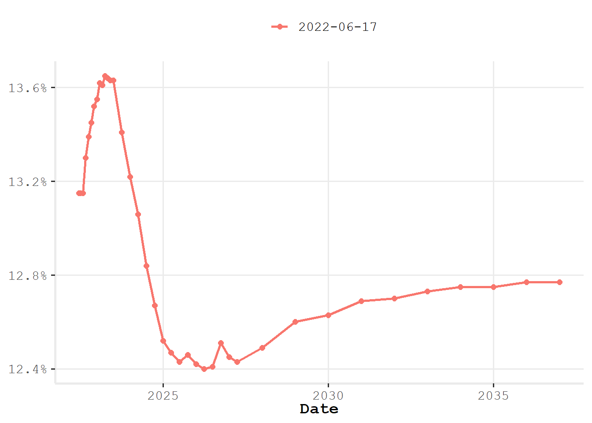
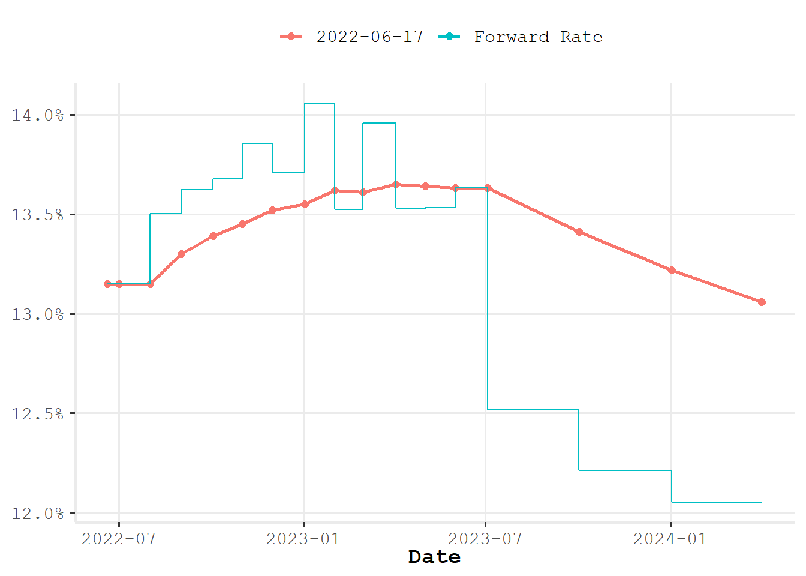

library(rb3)
refdate <- "2022-06-17"
fut <- futures_get(refdate)
yc <- yc_get(refdate)A versão 0.0.3 do pacote {rb3} trouxe funções que retornam super datasets. Estes super datasets são dataframes com dados organizados para um fim específico. Por exemplo, a função rb3::yc_get retorna um dataframe com dados da curva de juros para diversos vértices, dentre os vértices retornados alguns são referentes aos vencimentos dos contratos futuros utilizados para produzir a curva original. Para alguns problemas é interessante conhecer quais vértices são referentes aos futuros, por exemplo, na criação de fatores primitivos de risco, onde a interpolação deve ser realizada utilizando apenas os futuros. Os contratos futuros podem ser obtidos com a função rb3::futures_get. Dessa maneira, a função rb3::yc_superset junta os dados retornados pelas funções rb3::yc_get e rb3::futures_get identificando os vencimentos dos contratos futuros na curva de juros. Por isso super dataset, é um dataset mais rico!
Atualmente o pacote apresenta as seguintes funções superset:
rb3::yc_supersetretorna a curva de juros de prefixados com os contratos fututos DI1 identificados.rb3::yc_usd_supersetretorna a curva de cupom cambial com os contratos fututos DOL identificados.rb3::yc_ipca_supersetretorna a curva de juros reais com os contratos fututos DAP identificados.rb3::cotahist_equity_options_supersetretorna dados de opções de ações com informações de ações e taxas de juros.
Vou exemplificar a utilização de um super dataset com a função rb3::yc_superset. Vou criar uma curva de juros apenas com os contratos futuros de DI1. Mas antes vou responder uma pergunta que talvez tenha chegado a cabeça dos leitores: Por que criar uma curva de juros apenas com os contratos futuros se já tenho uma curva de juros cheia de vértices? Primeiramente, toda curva de juros nasce a partir de um conjunto de contratos, no caso da curva prefixada utiliza-se os contratos futuros DI1, mais a taxa DI no vértice de 1 dia útil, assim, estaria retornando a curva ao seu estado original. Logo, todos os demais vértices da curva são obtidos a partir da interpolação entre os contratos futuros. Adicionalmente, caso eu precise de um vértice que não está na curva será necessário interpolar e como interpolar se não conheço os vértices referentes aos futuros? Bem, posso interpolar nos vértices presentes, mas assim estaria interpolando sobre vértices interpolados. Não é um grande problema fazer isso, mas isso pode trazer problemas na contrução de fatores de risco para taxa de juros, por exemplo.
Dando sequência, primeiro utilizamos o {rb3} para obter os dados dos futuros e da curva para a data de referência.
Depois passo estes dados para a função yc_superset que junta os dados para indentificar os contratos futuros.
df <- yc_superset(yc, fut)
df |> head()# A tibble: 6 × 7
refdate cur_days biz_days forward_date r_252 r_360 symbol
<date> <int> <dbl> <date> <dbl> <dbl> <chr>
1 2022-06-17 3 1 2022-06-20 0.132 0 <NA>
2 2022-06-17 7 5 2022-06-24 0.132 0.134 <NA>
3 2022-06-17 12 8 2022-06-29 0.132 0.125 <NA>
4 2022-06-17 13 9 2022-06-30 0.132 0.13 <NA>
5 2022-06-17 14 10 2022-07-01 0.132 0.134 DI1N22
6 2022-06-17 21 15 2022-07-08 0.132 0.134 <NA> Tendo o super dataset eu filtro as linhas referentes aos futuros e a linha referente a 1 dia útil.
library(dplyr)
Attaching package: 'dplyr'The following objects are masked from 'package:stats':
filter, lagThe following objects are masked from 'package:base':
intersect, setdiff, setequal, uniondf_curve <- bind_rows(
df |> filter(biz_days == 1) |> select(biz_days, r_252),
df |> filter(!is.na(symbol)) |> select(biz_days, r_252)
)
df_curve |> head()# A tibble: 6 × 2
biz_days r_252
<dbl> <dbl>
1 1 0.132
2 10 0.132
3 31 0.132
4 54 0.133
5 75 0.134
6 95 0.134Pronto! Tenho a curva original novamente.
Apenas para ilustrar, vamos utilizar o pacote {fixedincome} para construir um objeto de curva de juros e visualizar os dados.
library(fixedincome)
Attaching package: 'fixedincome'The following objects are masked from 'package:dplyr':
first, lastcurve <- spotratecurve(
df_curve$r_252, df_curve$biz_days, "discrete", "business/252", "Brazil/ANBIMA",
refdate = as.Date(refdate)
)Visualizando a curva.
ggspotratecurveplot(curve)
Visualizando para um horizonte mais curto e adicionando as taxas a termo.
curve_2y <- curve |> fixedincome::first("2 years")
ggspotratecurveplot(curve_2y) +
ggplot2::autolayer(forwardrate(curve_2y))
Bem, os super datasets estão aí para ajudar! Entregam dados da B3 mais mastigados para as necessidades dos quants do mercado brasileiro.